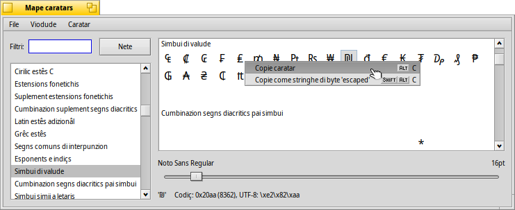

Mape caratars
Mape caratars
| Deskbar: | ||
| Posizion: | /boot/system/apps/CharacterMap | |
| Impostazions: | ~/config/settings/CharacterMap settings |
Mape caratars al mostre ducj i caratars di ogni bloc Unicode.
Ae çampe tu âs i blocs Unicode standardizâts, adun cuntune comode funzion di filtri.
In maniere opzionâl, tu puedis sielzi ancje dal menù , che a son areis che no vegnin tocjadis dal Consorzi Unicode. Se tu ativis , i blocs che no fasin part dal caratar corint a vegnin visualizâts in grîs te liste dai blocs a çampe e no vegnin mostrâts te liste dai caratars a diestre.
A diestre a vegnin mostrâts i caratars efetîfs in chescj blocs, doprant il caratar specificât tal menù . Tu puedis determinâ se un simbul al fâs part di chel caratar (al ven dissegnât in neri), opûr se il sisteme al ufrìs un simbul di repeç di cualchi altri caratar (alore al ven dissegnât cuntun colôr grîs).
Sot dai simbui tu puedis cambiâ la dimension dal caratar. E sot di chê, a vegnin visualizât in esadecimâ, decimâl e notazion UTF-8, i valôrs dal caratar che al sta sot dal pontadôr dal mouse.
Tu puedis strissinâ e molâ un caratar dret de mape dai caratars intun editôr di tescj opûr fâ clic diestri suntun caratar par fâ (ALT C) o (SHIFT ALT C). Tal esempli al risulte € opûr \xe2\x82\xac.
Fasint clic suntun simbul al ven mostrât une sô visuâl ingrandide, torne fâs clic par sierâle.